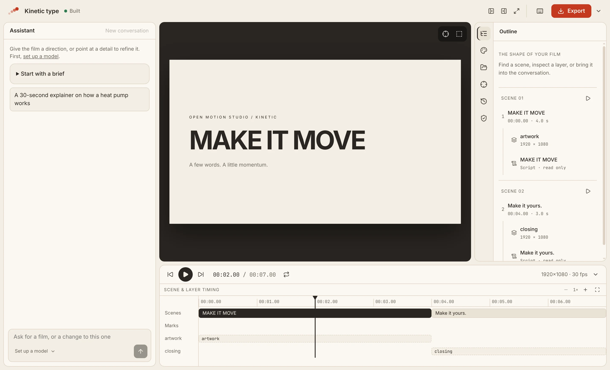
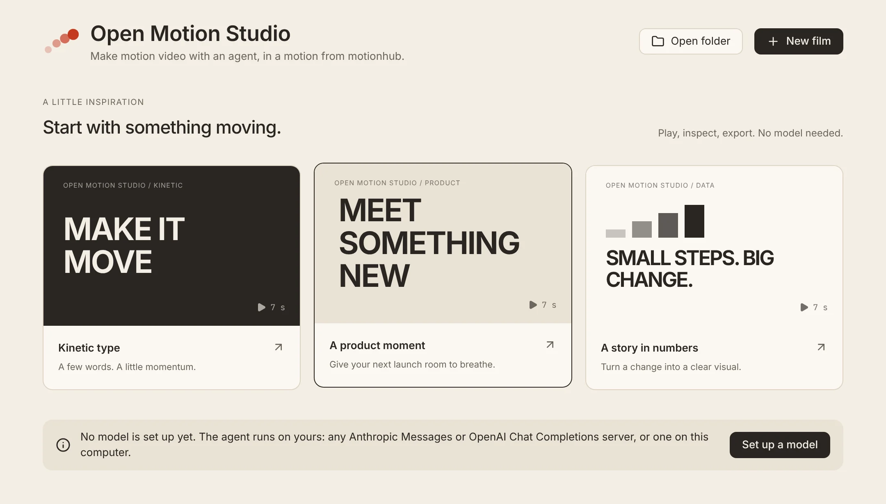

Make motion video with an agent.
Open a folder, pick a motion from motionhub, and talk to an agent on the model you choose. Watch it play, point at what is wrong on the picture, and export an MP4. No account, no credits, no server: your files stay on your disk.

One path, from an empty folder to an MP4.
-
Start a film
Open a folder, start a new film, or begin from one of the starting points that play without a model.
-
Pick a motion
Search motionhub, watch a motion's reel, and use it: its look, its rules for the agent and its components.
-
Bring your model
Any server that speaks Anthropic Messages or OpenAI Chat Completions, in the cloud or on this computer.
-
Ask for a video
The agent writes the film, looks at stills of its own work, and fixes what it sees.
-
Point at the picture
Mark a region or pick an element, and ask for the change right where it is.
-
Export
Export an MP4, or the film as a Remotion project to carry on elsewhere.
The agent sees what you point at. You see what it looked at.
Your model, your key
Choose the provider and pay it directly. Keys are sealed with your system's keychain, and calls go from your machine to your provider, with no proxy of ours between.
Marks on the picture
Draw a box or pick an element on the stage. The agent receives where it is, which scene and layer it belongs to, and a still of the moment.
Motions from motionhub
A motion is a look you can reuse: colour tokens, React components and the rules the agent follows. Use one from the open catalogue, or none.
Scenes you can find
The outline and the timeline show the film's scenes, layers and lines. Play one scene, inspect a layer, or bring it into the conversation.
Go back safely
Every agent turn is a checkpoint. Restore an earlier one without Git; your own edits are never silently overwritten, and a restore can be undone.
Nothing else to install
The Studio builds, plays, photographs and exports the film itself, with the ffmpeg it ships. No Node, no dev server, no render script.
A film is a file you can read.
A film is film.tsx: scenes of layers, drawn by time with @motionhub/runtime. The
agent writes it, you can open it in any editor, and it lives in your folder next to its motions and media.
There is one engine, the Studio's own: nobody picks a renderer before making anything.
import { Film, Scene, Layer, Line } from '@motionhub/runtime'; export const film = { width: 1920, height: 1080, fps: 30 }; export default function Main() { return ( <Film> <Scene id="opening" duration={4}> <Layer id="title" x={120} y={360} w={1680} h={360}> <Title text="MAKE IT MOVE" /> </Layer> <Line id="intro">A few words. A little momentum.</Line> </Scene> <Scene id="closing" duration={3}>{/* … */}</Scene> </Film> ); }
The pieces you would otherwise wire together.
- A terminal agent beside a browser tab It works, but the agent cannot see what you point at, you cannot see what it looked at, and the model is the agent vendor's.
- A hosted AI video service No account, no credits and no server: the files stay on your disk and the calls go to your provider.
- A preview and render UI Remotion Studio and HyperFrames Studio preview and render; their agent, if any, lives outside them.
Start with something moving.
Three starting-point films open straight from the launcher. Play, inspect and export them before you have set up a model; then ask the agent to make one yours.

Install, or build it yourself.
Installers for macOS, Windows and Linux will be published on
the releases page; until the
first release, run it from the source. You need Node (the version in .nvmrc) and pnpm.
# clone and run with hot reload git clone https://github.com/motionhub-dev/open-motion-studio cd open-motion-studio corepack enable pnpm install pnpm dev # an installer for this platform pnpm package